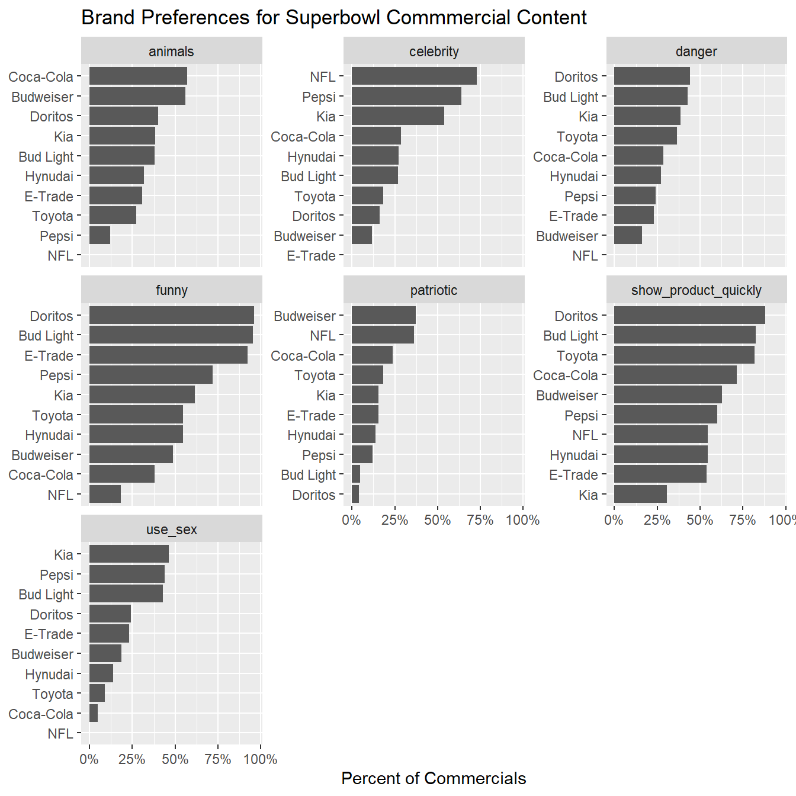
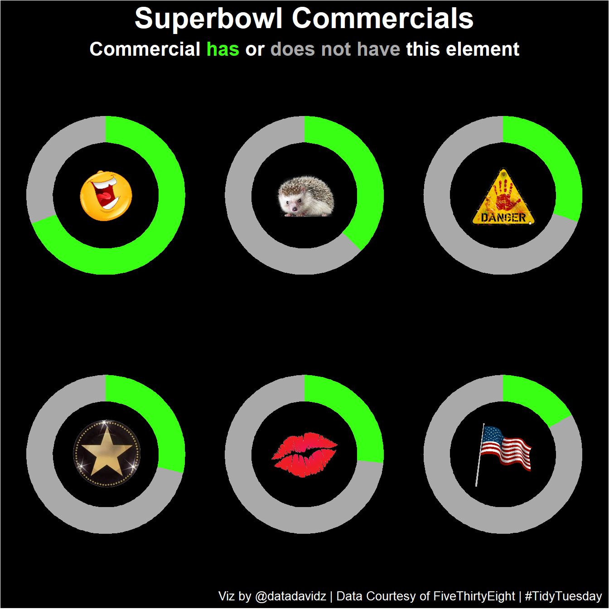

Posted on March 2, 2021
A quick analysis of the weekly #TidyTuesday dataset organized by the R4DS Online Learning Community. My approach is to apply my data science skills to explore one question I have about the data and generate a visualization that addresses this question. The main purpose for me is to practice and try out new things. I am never completely satisfied with the end result but I do the best I can in a short period of time.
What I learned this week about R and the Tidyverse
Brief explanation of the dataset
This week’s dataset came from FiveThirtyEight and contained data on Superbowl commercials from 2000-2020. The commercials were analyzed according to seven different elements including things like whether they were funny, patriotic, contained animals, showed product quickly and so on. Data for the YouTube post of each commercial was also available including the total view counts, likes and dislikes as well as information on the date posted and hyperlink. I focused on the number of commercials containing for each element: funny, animals, patriotic, celebrity, danger and use sex.
Initial conclusions from exploring the dataset:
Figure out counts per category
ads_per_brand <- youtube %>% count(brand, sort = TRUE)
ads_per_category <- youtube %>%
select(brand, funny:use_sex) %>%
mutate(across(.cols = funny:use_sex, .fns = as.numeric)) %>%
pivot_longer(funny:use_sex, names_to = "category", values_to = "count") %>%
group_by(brand, category) %>%
summarize(count = sum(count), .groups = "drop") %>%
left_join(ads_per_brand, by = "brand") %>%
mutate(prop = count / n) %>%
rename(total = n)Overall counts per category (247 ads total)
overall_data <- youtube %>%
select(funny:use_sex) %>%
mutate(across(.cols = funny:use_sex, .fns = as.numeric)) %>%
pivot_longer(funny:use_sex, names_to = "category", values_to = "count") %>%
group_by(category) %>%
count(count) %>%
mutate(new_category = ifelse(count == 0, paste("Not", str_to_title(category)), str_to_title(category))) %>%
arrange(desc(count), .by_group = TRUE) %>%
ungroup()
overall_data## # A tibble: 14 x 4
## category count n new_category
## <chr> <dbl> <int> <chr>
## 1 animals 1 92 Animals
## 2 animals 0 155 Not Animals
## 3 celebrity 1 71 Celebrity
## 4 celebrity 0 176 Not Celebrity
## 5 danger 1 75 Danger
## 6 danger 0 172 Not Danger
## 7 funny 1 171 Funny
## 8 funny 0 76 Not Funny
## 9 patriotic 1 41 Patriotic
## 10 patriotic 0 206 Not Patriotic
## 11 show_product_quickly 1 169 Show_product_quickly
## 12 show_product_quickly 0 78 Not Show_product_quickly
## 13 use_sex 1 66 Use_sex
## 14 use_sex 0 181 Not Use_sexCreate a function for selecting data, rename columns and convert to factors.
select_ad_element <- function(overall_data, element) {
overall_data %>%
filter(category == element) %>%
select(category = new_category, count = n) %>%
mutate(category = factor(category, levels = category))
}The first figure was constructed to look at the preferences for Superbowl commercial content by brand. This figure uses the tidytext package to reorder the columns by facet for easier interpretation.
library(tidytext)
ads_per_category %>%
mutate(brand = reorder_within(brand, prop, category)) %>%
ggplot(aes(x = prop, y = brand)) +
facet_wrap(~category, scale = "free_y") +
geom_col() +
scale_y_reordered() +
scale_x_continuous(labels = scales::percent) +
labs(title = "Brand Preferences for Superbowl Commmercial Content",
y = NULL,
x = "Percent of Commercials")
Create a doughnut chart example to see how it will look.
data <- tibble(category = c("Funny", "Not Funny"),
count = c(75, 25))
data$fraction <- data$count / sum(data$count)
data$ymax <- cumsum(data$fraction)
data$ymin <- c(0, head(data$ymax, n=-1))
p1 <- ggplot(data, aes(ymax=ymax, ymin=ymin, xmax=4, xmin=3, fill=category)) +
geom_rect() +
coord_polar(theta="y") + # Try to remove that to understand how the chart is built initially
xlim(c(1, 4)) +
theme_void() +
theme(legend.position = "none",
plot.background = element_rect(fill = "black")) +
scale_fill_manual(values = c("#39FF14", "#A9A9A9"))
p1Add an image to the middle of the doughnut chart using the cowplot package to indicate the category analyzed.
ggdraw() +
draw_plot(p1) +
draw_image("./img/laugh_emoji.png", scale = 0.3)Create a function for the doughnut chart as we want to create one for each category.
plot_doughnut <- function(data) {
data$fraction <- data$count / sum(data$count)
data$ymax <- cumsum(data$fraction)
data$ymin <- c(0, head(data$ymax, n=-1))
p1 <- ggplot(data, aes(ymax=ymax, ymin=ymin, xmax=4, xmin=3, fill=category)) +
geom_rect() +
coord_polar(theta="y") + # Try to remove that to understand how the chart is built initially
xlim(c(1, 4)) +
theme_void() +
theme(legend.position = "none",
plot.background = element_rect(fill = "black")) +
scale_fill_manual(values = c("#39FF14", "#A9A9A9"))
return(p1)
}Create all six plots using the functions to both select the ad element and plot the doughnut charts.
p1 <- plot_doughnut(select_ad_element(overall_data, "funny"))
p1_funny <- ggdraw() +
draw_plot(p1) +
draw_image("./img/laugh_emoji.png", scale = 0.3)
p2 <- plot_doughnut(select_ad_element(overall_data, "animals"))
p2_animals <- ggdraw() +
draw_plot(p2) +
draw_image("./img/hedgehog.png", scale = 0.35)
p3 <- plot_doughnut(select_ad_element(overall_data, "danger"))
p3_danger <- ggdraw() +
draw_plot(p3) +
draw_image("./img/danger.png", scale = 0.35)
p4 <- plot_doughnut(select_ad_element(overall_data, "celebrity"))
p4_celebrity <- ggdraw() +
draw_plot(p4) +
draw_image("./img/hollywood.png", scale = 0.35)
p5 <- plot_doughnut(select_ad_element(overall_data, "use_sex"))
p5_sexy <- ggdraw() +
draw_plot(p5) +
draw_image("./img/lips.png", scale = 0.35)
p6 <- plot_doughnut(select_ad_element(overall_data, "patriotic"))
p6_patriotic <- ggdraw() +
draw_plot(p6) +
draw_image("./img/flag.png", scale = 0.3)Add the six doughnut charts to one figure using the patchwork package. Adjust to a custom “dark” theme. Using the ggtext package, the font color is changed for different words to convey the meaning of the doughnut chart scale. The change of font color is done by passing html code in the subtitle definition.
(p1_funny + p2_animals + p3_danger) / (p4_celebrity + p5_sexy + p6_patriotic) +
plot_annotation(theme = theme(plot.background = element_rect(fill = "black"),
plot.subtitle = element_markdown(color = "white", hjust = 0.5, size = 16, face = "bold"),
plot.caption = element_text(color = "white", size = 10),
#panel.background = element_blank(),
plot.title = element_text(color = "white", size = 24, family = "sans", face = "bold", hjust = 0.5)),
title = "Superbowl Commercials",
subtitle = "<span style='color: white;'>Commercial</span><span style='color:#39FF14;'> has</span>
or<span style='color:#A9A9A9;'> does not have</span> this element",
caption = "Viz by @datadavidz | Data Courtesy of FiveThirtyEight | #TidyTuesday")
Overall, the high proportion of Superbowl commercials for these ten brands contained a funny element while the lowest proportion contained a patriotic element. An analysis of categories showed differences between brands. For example, Doritos strongly prefers funny Superbowl commercials while the NFL prefers commercials containing a celebrity. I tried a final figure which was intentionally light on textual elements and tried to convey the overall message with the plots and images. More of an “infographic” type of approach.
A work by datadavidz